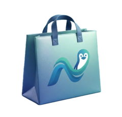

Documentação do NLinux
Tudo o que você precisa para instalar a distribuição, aproveitar o desktop no dia a dia e — se quiser — gerar a sua própria ISO. O conteúdo reflete o código do projeto NLinux.
Visão geral
O NLinux é uma distribuição Arch Linux rolling com desktop Umbriel (Wayland), tela de login greetd com noctalia-greeter e shell Noctalia V5. A ISO ao vivo boota direto para o desktop — a instalação é feita somente pelo instalador web que roda no navegador dentro do próprio live.
O sistema instalado já vem com a Loja NLinux Software em /opt/nlinux-software, `yay` para AUR e a janela de boas-vindas no primeiro login.
Guia rápido: grave a ISO → boote no live → abra o Instalar NLinux na tela inicial → siga os 10 passos → reinicie e escolha NLinux na lista de boot.
Requisitos
| Item | Detalhe |
|---|---|
| Arquitetura | x86_64 |
| Firmware | UEFI obrigatório — o instalador aborta em máquina sem /sys/firmware/efi |
| Memória | O instalador não impõe mínimo; o swap é feito por zram (metade da RAM, até 4 GB) |
| Pendrive | 8 GB ou mais (a ISO tem ~2,9 GB) |
| Espaço em disco | O instalador só exige mais de 5 GB livres no modo dual boot; como referência, o sistema copiado ocupa quase o tamanho da ISO — 20 GB ou mais deixa espaço para apps e atualizações |
| Internet | Opcional no modo rápido (offline); obrigatória no modo completo (online) |
Legacy BIOS não instala. A ISO tem menu de boot para BIOS (syslinux) e você consegue experimentally usar o live, mas o instalador exige UEFI. Desative o CSM/Legacy Boot na sua firmware.
Gravar a ISO no pendrive
Baixe a ISO, verifique o pendrive e grave. O dd apaga o dispositivo inteiro — confira a letra do disco duas vezes.
# lista os discos epartições (use o nome em /dev/...)
lsblk -d -o NAME,SIZE,MODEL,TRAN
# grava a ISO (substitua /dev/sdX pelo pendrive)
sudo dd if=nlinux-ISO-x86_64.iso of=/dev/sdX bs=4M status=progress conv=fsync
# alternativa: balenaEtcher / VentoyOpções do menu de boot
| Modo | Entradas |
|---|---|
| UEFI (systemd-boot) | NLinux ao vivo (x86_64, UEFI) (padrão) · NLinux ao vivo — leitor de tela · Memtest86+ |
| UEFI (GRUB) | Menu alternativo do perfil releng, com a entrada principal renomeada para NLinux ao vivo |
| BIOS (syslinux) | Menu Bem-vindo ao NLinux com a arte do NLinux: Iniciar NLinux (padrão) · Iniciar NLinux with speech · Boot existing OS · Memtest86+ · HDT · Reboot · Power Off |
Primeiro boot no live
Todas as opções de boot levam direto ao desktop ao vivo: autologin no tty1 inicia o greetd (vt7) com noctalia-greeter e o Umbriel/Noctalia. Não há prompt de instalação no console.
Login do live
Usuário nlinux · senha nlinux. O mesmo usuário tem sudo sem senha, usado pelo instalador web.
Terminais
Mod+T abre o kitty. Para um shell root: Ctrl+Alt+F2.
Rede e áudio
NetworkManager já sobe no live (o systemd-networkd é desativado para não conflitar) e o PipeWire + WirePlumber ficam ativos.
Apps do live
Os mesmos apps da instalação: Firefox, kitty, fish, Nautilus, Discord, Telegram e a Loja NLinux Software.
O instalador é aberto pelo atalho Instalar NLinux (desktop ou menu), que sobe o servidor local e abre o Firefox em modo kiosk apontando para http://127.0.0.1:8765. Para trocar a porta: NLINUX_WEB_PORT=9000. O log do servidor fica em /tmp/nlinux-web.log.
Não existe instalador TUI: a instalação é exclusivamente pelo navegador. O atalho só funciona com desktop gráfico e Firefox presentes no live.
Instalador web em 10 passos
O assistente é um wizard no navegador com 10 etapas. Depois de confirmar, a mesma tela vira o painel de instalação: lista de etapas (✓ concluída, ▸ atual, ○ pendente), barra de progresso e as últimas linhas de log com o progresso real do rsync/pacstrap.
Disco de destino
Lista os discos via lsblk, ignorando dispositivos loop e zram. Mostra a ESP existente quando houver.
Modo: apagar o disco ou dual boot
Apagar disco inteiro remove toda a tabela de partições. Instalar ao lado mantém o sistema existente (ex.: Windows) e cria a raiz NLinux no espaço livre; nesse modo aparece o controle para redimensionar a partição NTFS.
veja as regras do dual boot em #modosSistema de arquivos
ext4 (estável e simples) ou btrfs (snapshots e compressão, com subvolumes @, @home, @log e @pkg).
Idioma do sistema
Uma única escolha define locale, teclado e fuso horário juntos: Brasil, Estados Unidos, Portugal, Reino Unido, Espanha, França, Alemanha, Itália e Japão. Define também o idioma do instalador.
Brasil → pt_BR.UTF-8 · br-abnt2 · America/Sao_PauloEspelho de repositórios
Automático (recomendado), UFSCar (BR), Leaseweb (US), Dogado (DE) ou Kyoto (JP). O espelho escolhido vai para o topo do mirrorlist e o instalador liga o DisableDownloadTimeout no pacman.conf.
Tipo de instalação
Rápida (offline) — padrão, copia o sistema do pendrive para o disco, sem internet. Completa (online) — baixa e instala os pacotes do zero com pacstrap + AUR.
Criptografia LUKS2
Com LUKS2 a raiz vira cryptroot e o initramfs recebe o hook sd-encrypt. Sem senha de criptografia é preciso desbloqueá-la a cada boot.
GPU
Automático (drivers genéricos, sem módulo específico), AMD, Intel ou NVIDIA. O microcódigo (intel-ucode/amd-ucode) é detectado automaticamente.
Usuário, hostname e senha
Nome de usuário (minúsculas, números, _ e -), hostname (padrão nlinux), senha com confirmação e a opção de usar a mesma senha do root. O shell do usuário é fish.
Resumo e confirmação
Todas as escolhas em uma tabela, com o aviso de que o disco será apagado (ou de que o outro sistema será preservado). Depois é só Confirmar e iniciar e acompanhar o progresso.
O disco de destino é apagado por completo no modo wipe. Faça backup antes. O instalador desmonta tudo sozinho ao final e pede para remover o pendrive e reiniciar.
Modos de instalação e dual boot
| Rápida offline (padrão) | Completa online | |
|---|---|---|
| Etapa de pacotes | rsync do pendrive para o disco (alguns minutos) | pacstrap baixa e instala base.packages + desktop.packages + drivers |
| Internet | Não precisa | Precisa |
| AUR | Já vem no sistema copiado (pula o yay) | Compila no chroot com yay |
| Variável | OFFLINE=1 | OFFLINE=0 |
A cópia offline foi feita para não travar no live: o rsync exclui os diretórios que mudam durante a cópia (/proc, /sys, /run, /home, caches…), roda com --no-inc-recursive e um watchdog de 40 minutos, e retoma sozinho (até 4 tentativas, com --partial) se travar ou for interrompido. Avisos não fatais não abortam a instalação; só erros fatais param tudo. O log fica em /tmp/offline-rsync.log e é copiado para /var/log/offline-rsync.log no sistema instalado.
Dual boot ao lado do Windows
- O instalador preserva a ESP existente e cria a partição NLinux (tipo
8304 archroot) no espaço livre. - Requisitos: uma ESP FAT32 no disco escolhido e mais de 5 GiB livres.
- Se não houver espaço, a interface oferece um controle deslizante para reduzir a partição NTFS — o ajuste só é aplicado após uma confirmação explícita.
- A redução só funciona em NTFS; outros sistemas de arquivos não são redimensionados.
- O particionamento normal (wipe) cria GPT com 1 GB de ESP FAT32 montada em
/boote o restante na raiz (8309 cryptrootcom LUKS ou8304 archrootsem LUKS).
Antes de redimensionar NTFS: faça backup, desative o BitLocker e a Inicialização Rápida/hibernação do Windows. O Windows pode rodar uma verificação de disco no primeiro início após o ajuste.
Depois de instalar
Remova o pendrive e reinicie. Nos dois modos o chroot roda as mesmas etapas finais: systemd-boot, initramfs, criação do usuário, dotfiles e serviços.
- Entrada “NLinux” na lista de boot UEFI. O instalador registra a entrada via
efibootmgr --create(removendo o “Linux Boot Manager” dobootctl) e grava o fallback/EFI/BOOT/BOOTX64.EFI— assim o disco aparece como NLinux na firmware e, sem NVRAM, comoUEFI: <disco>. - Bootloader instalado em
/boot(systemd-boot), com initramfs que incluisd-encryptquando há LUKS. - Swap em zram (
zram-generator, zstd) commin(ram / 2, 4096)MB. - Serviços habilitados: NetworkManager, bluetooth, greetd e accounts-daemon, além do NTP (
systemd-timesyncd). - Login pelo greetd com noctalia-greeter; o Wayland e o cursor
Bibata-Modern-Icevêm de/etc/environment. - Loja NLinux Software copiada para
/opt/nlinux-software, com o atalho Loja de Software NLinux no menu e o ícone já fixado na dock. - Boas-vindas na primeira sessão (janela única em GTK3, disparada pelo autostart do Umbriel). Para ver de novo:
nlinux-welcome --menu. - Identidade da distro:
/etc/nlinux-installedmarca o primeiro boot e/etc/nlinux-releasegrava nome, versão (data) e data de instalação. - O instalador é removido do sistema instalado:
/opt/noctalia-installer, binários e atalhos do instalador saem do disco.
Se a instalação falhar, o instalador grava o motivo no disco de destino em /var/log/install-error.log (com as últimas 150 linhas do log), antes de desmontar.
Atalhos de teclado
Mod é a tecla Super. Os atalhos vêm de config/.config/umbriel/src/keybinds.toml e podem ser ajustados nesse arquivo (veja personalizar).
| Ação | Atalho |
|---|---|
| Abrir terminal (kitty) | Mod + T |
| Abrir launcher | Mod |
| Launcher de emojis | Mod + Z |
| Painel de área de transferência | Mod + V |
| Painel de papel de parede | Mod + W |
| Notas | Mod + N |
| Barra de status | Mod + X |
| Painel de sessão | Mod + Esc |
| Visão geral (overview) | Mod + I · Mod + Tab · Mod + botão do meio |
| Alternador de janelas | Alt + Tab |
| Focar janela à esquerda / direita | Mod + Rolagem ↑ / ↓ |
| Mover coluna | Mod + Shift + Rolagem ↑ / ↓ |
| Proporção ⅓ / ½ / ⅔ / tela cheia | Mod + A / S / D / F |
| Ciclar proporção | Mod + R (e Shift para o inverso) |
| Proporção secundária | Mod + Alt + R |
| Scratchpad: abrir | Mod + Espaço |
| Scratchpad: mandar para | Mod + Shift + Espaço |
| Scratchpad: restaurar | Mod + Ctrl + Espaço |
| Fechar janela | Mod + Q |
| Captura de região / tela | Print / Mod + Print (ou Mod+P / Mod+Shift+P) |
| Volume ±2% | Teclas de volume ↑ / ↓ |
| Mudo | Mod + Mudo |
| Reproduzir / pular / anterior | Play / Next / Prev (via playerctl) |
| Brilho ±5% | Teclas de brilho ↑ / ↓ |
Dock e autostart
O Noctalia abre com o dock habilitado, smart auto-hide e estes aplicativos fixados: Telegram, WhatsApp, Firefox, Discord, kitty, Nautilus, Spotify e a Loja NLinux Software. O Umbriel sobe noctalia, nlinux-welcome, WhatsApp e Telegram no autostart, e os temas são aplicados em GTK3, GTK4, kitty e starship a partir de um único conjunto de templates.
Loja de softwarecatálogo v128

A NLinux Software já vem instalada na ISO e no sistema instalado (/opt/nlinux-software, comando nlinux-software, atalho Loja de Software NLinux no menu e ícone já fixado na dock). O catálogo reúne 159 aplicativos em 12 categorias, com busca, ficha do app, capturas de tela e instalação via polkit.
O catálogo é atualizado sozinho: a cada 15 s a loja confere o commit da main no GitHub e só baixa o catálogo quando ele muda. Sem internet, continua funcionando com o catálogo local.
A revisão e as contagens desta página (v128, 159 apps, 12 categorias) também saem desse repositório: esta doc lê o catalog-head.json no carregamento e conta as categorias no catálogo completo, guardando o resultado em cache. Publicar um catálogo novo atualiza a página sem ninguém editar o site.
Problemas comuns
A instalação falhou. Onde eu leio o erro?
/var/log/install-error.log, com as últimas 150 linhas do log da instalação. Monte a partição do sistema e leia esse arquivo. No live, o log do instalador web fica em /tmp/nlinux-web.log.O instalador diz que só suporta UEFI
/sys/firmware/efi e aborta em modo legado. Ative o modo UEFI na firmware e desligue CSM/Legacy Boot. Para conferir depois de instalado: [ -d /sys/firmware/efi ] && echo UEFI.O dual boot não aparece disponível
Posso reduzir a partição do Windows?
A cópia offline foi interrompida
rsync retoma sozinho com --partial quando é interrompido, e avisos não fatais (arquivos que somem no live, atributos da ESP FAT) não abortam mais a instalação. Se parar de vez, confira espaço e o log em /var/log/offline-rsync.log.Sem internet: consigo instalar?
O NLinux não aparece na lista de boot da firmware
efibootmgr disponível, o instalador só garante o fallback /EFI/BOOT/BOOTX64.EFI — nesse caso o disco aparece como UEFI: <disco>. Você também pode entrar no menu de boot do firmware (normalmente F8/F11/F12) e escolher a entrada manualmente.A tela ficou preta depois do boot
Quero instalar sem o instalador web (SSH/servidor)
./install.sh no ambiente live. Veja a tabela de variáveis. O instalador web é apenas a interface para montá-las; ele chama o mesmo script com GUI_DRIVEN=1.Gerar a ISO
Em uma máquina Arch Linux, dentro do projeto nlinux-iso-build:
# gera iso/out/nlinux-<data>-x86_64.iso
./build-iso.sh
# regerar a arte do menu de boot BIOS (precisa de Python + Pillow)
./make-splash.shO que o build-iso.sh faz, em ordem:
- Instala o
archisose faltar e regeneraiso/profile/a partir do perfil releng instalado (compatível com a versão domkarchiso). - Aplica os metadados de
iso/profiledef.sh(nome/label/versão =nlinux, publisherNLinux <https://nlinux.dev>). - Anexa
iso/packages.liveà lista de pacotes do live e copia a camadaiso/airootfs/(autologin, auto-run, branding, serviços do live). - Embute o projeto em
/opt/noctalia-installerno live (install.sh,install/,config/,packages/). - Transforma o boot: systemd-boot (UEFI), GRUB (UEFI) e syslinux (BIOS), com títulos, itens e a splash do NLinux.
- Roda
mkarchiso -v— que executa a camadaiso/airootfs/root/customize_airootfs.shno chroot do build (AUR, greetd, usuário do live, autologin) — e gera a ISO (~2,9 GB).
Não rode dois builds ao mesmo tempo: o script roda em um namespace de mounts privado e desmonta mounts deixados por builds interrompidos antes de começar. A camada do live compila os pacotes AUR via yay em duas etapas (noctalia-greeter, xdg-desktop-portal-umbriel-git e xwayland-satellite-git primeiro; depois umbriel-git e whatsapp-linux-desktop-bin, que dependem do portal) — por isso o build é lento (Rust/cargo) e precisa de internet.
Depois de gerar, grave a ISO com dd ou balenaEtcher e valide na máquina de destino. Detalhes da release na página do NLinux.
Estrutura do projeto
build-iso.sh gera a ISO (sudo; limpa mounts de builds interrompidos)
make-splash.sh gera splash.png a partir de NLinux.jpg (menu BIOS)
install.sh instalador principal (web-installed; GUI_DRIVEN=1)
install/translations.py traduções do instalador (7 idiomas)
install/chroot/ etapas executadas dentro do chroot do sistema instalado
web/ servidor + UI do instalador web (server.py, static/)
packages/ listas de pacotes do sistema instalado
iso/packages.live pacotes extras do live (ISO)
iso/airootfs/ camada over do live (branding, auto-run, atalhos)
iso/profiledef.sh metadados da ISO (nome, label, versão)
config/ dotfiles aplicados ao usuário (live e instalado)
nlinux-software/ Loja NLinux Software embutida no live
NLinux.jpg / splash.png arte do menu de bootEtapas do chroot
Roteiro da instalação: install.sh → install/chroot/all.sh → as etapas abaixo. No modo offline a etapa de AUR é pulada.
| # | Arquivo | O que faz |
|---|---|---|
| 1 | 10-system.sh | Fuso, locale, keymap, hostname/hosts, branding do os-release, pacman, pacman-key, initramfs (com sd-encrypt quando há LUKS), zram, usuários e senhas (shell fish), sudoers e systemd-boot com a entrada NLinux |
| 2 | 20-aur.sh | Usuário de sistema greeter; usuário temporário builder (sudo sem senha) para instalar o yay-bin e rodar yay -S dos pacotes AUR; remove o builder no final |
| 3 | 30-greetd.sh | /etc/greetd/config.toml com o noctalia-greeter (sessão padrão umbriel) |
| 4 | 40-user-config.sh | Copia config/.config → ~/.config e config/.local → ~/.local (ícones/cursor Bibata, logo do fastfetch), resolvendo templates .tpl com o layout do teclado |
| 5 | 41-welcome.sh | Marca /etc/nlinux-installed e instala o nlinux-welcome (janela única no 1º login) |
| 6 | 50-services.sh | Habilita NetworkManager, bluetooth, greetd e accounts-daemon; escreve /etc/environment (Wayland + cursor) e liga o NTP com systemd-timesyncd |
Listas de pacotes
| Lista | Conteúdo |
|---|---|
| packages/base.packages | Kernel e firmware, rede (NetworkManager, bluez), áudio (PipeWire + WirePlumber), cryptsetup/lvm2, fontes, ferramentas de terminal (fzf, ripgrep, fd, eza, bat, starship, fastfetch, btop, htop) e pacman-contrib |
| packages/desktop.packages | Stack Noctalia (noctalia, greetd), kitty, fish, starship, fastfetch, apps (firefox, nautilus, discord, telegram, spotify-launcher, gnome-text-editor, eartag), swaylock/idle, wl-clipboard, grim/slurp, zram-generator, mpv/ffmpeg/imagemagick, jq/yq e as dependências da loja (python, python-gobject, webkit2gtk-4.1) |
| packages/aur.packages | xdg-desktop-portal-umbriel-git, umbriel-git, noctalia-greeter, xwayland-satellite-git (X11 no Umbriel) e whatsapp-linux-desktop-bin — via yay no chroot |
| iso/packages.live | Ferramentas do instalador (cryptsetup, gdisk, btrfs-progs, parted, python, webkit2gtk-4.1, efibootmgr, polkit), rede, bluetooth, áudio e os mesmos apps do desktop, para o live ser uma cópia fiel do sistema instalado |
As listas são arquivos de texto: um pacote por linha, comentários com #. No modo online o pacstrap usa base.packages + desktop.packages + os drivers da GPU escolhida + o microcódigo detectado.
Personalizar
Metadados da ISO
iso/profiledef.sh: nome, label, aplicação e versão.
Pacotes
Edite packages/ e iso/packages.live.
Dotfiles
config/: kitty, fish, starship, fastfetch, Umbriel e os cursores Bibata. Aplicados ao usuário do live e do sistema instalado.
Camada do live
iso/airootfs/: autologin, auto-run, branding e serviços (root/customize_airootfs.sh roda no chroot do build).
Etapas da instalação
install/chroot/*.sh — edite ou adicione etapas no all.sh.
Arte do boot
Substitua NLinux.jpg e rode ./make-splash.sh (640×480, menu syslinux).
Arquivos com sufixo .tpl são templates: __KEYBOARD_LAYOUT__ é substituído pelo layout derivado do keymap escolhido (br-abnt2 → br, us → us…). O fish_variables não é versionado porque guarda caminhos específicos da máquina.
Variáveis do instalador
Para instalar sem passar pelo navegador, exporte as variáveis antes de rodar o install.sh:
sudo env INSTALL_USER=felipe INSTALL_USER_PASS=senha123 ROOT_PASS=senha123 \
INSTALL_DISK=/dev/nvme0n1 FS_TYPE=btrfs USE_LUKS=1 GPU=amd ./install.sh| Variável | Padrão | Para que serve |
|---|---|---|
| INSTALL_USER / INSTALL_USER_PASS | nlinux / nlinux | Nome e senha do usuário criado |
| ROOT_PASS | nlinux | Senha do root (o padrão é a mesma do usuário) |
| LUKS_PASS | nlinux | Senha de desbloqueio do disco |
| HOSTNAME | nlinux | Nome da máquina |
| LOCALE / KEYMAP / ZONEINFO | pt_BR.UTF-8 / br-abnt2 / America/Sao_Paulo | Idioma, teclado e fuso do sistema |
| MIRROR | (vazio = automático) | URL base do espelho de repositórios |
| OFFLINE | 1 | 1 = rápida (offline), 0 = completa (online) |
| INSTALL_DISK (DISK) | (escolhido no menu) | Disco de destino |
| INSTALL_MODE | wipe | wipe apaga o disco; dual instala ao lado de outro sistema |
| DUAL_RESIZE_PARTITION / DUAL_RESIZE_BYTES | (vazio / 0) | Partição NTFS a reduzir e tamanho a liberar no dual boot |
| FS_TYPE | (escolhido no menu) | ext4 ou btrfs |
| USE_LUKS | (escolhido no menu) | 1 criptografa a raiz com LUKS2 |
| GPU | (escolhido no menu) | intel, amd, nvidia ou vm (genérico) |
| MICROCODE | detectado | intel-ucode / amd-ucode |
| NLLANG | pt | Idioma da interface do instalador (pt, en, es, fr, de, it, ja) |
Pré-checagens do instalador: exige root, UEFI e o pacstrap (isto é, rodar a partir do ambiente live do Arch). Sem rede aparente, ele avisa que o modo online pode falhar e sugere o rápido offline. Sem gdisk ou cryptsetup, instala o que falta no live.